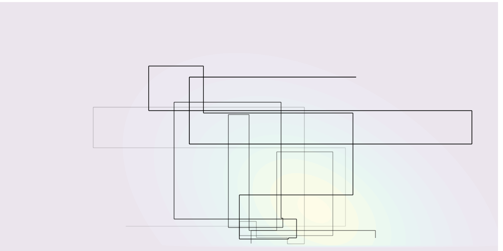
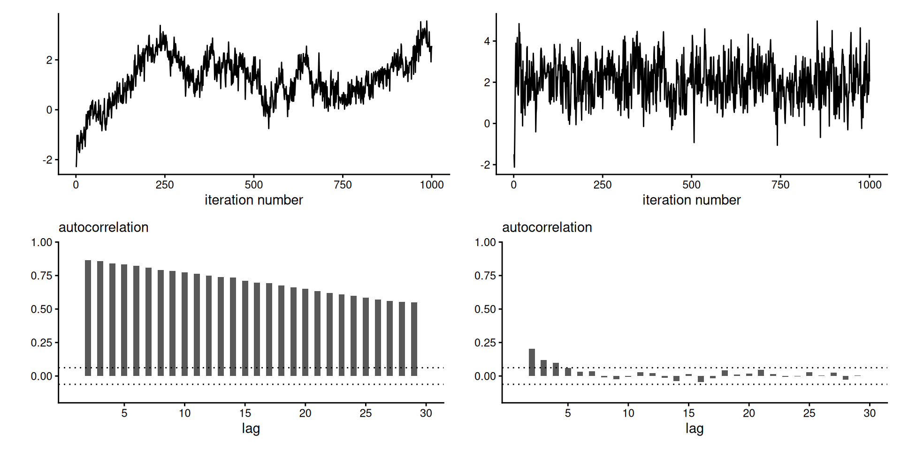
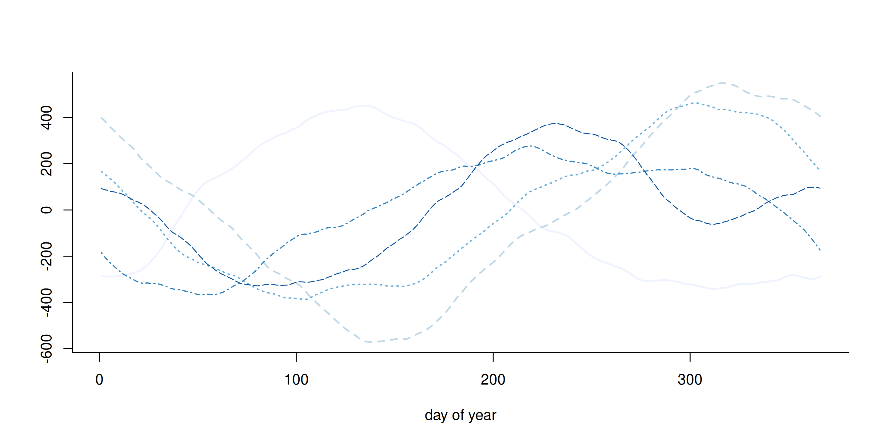
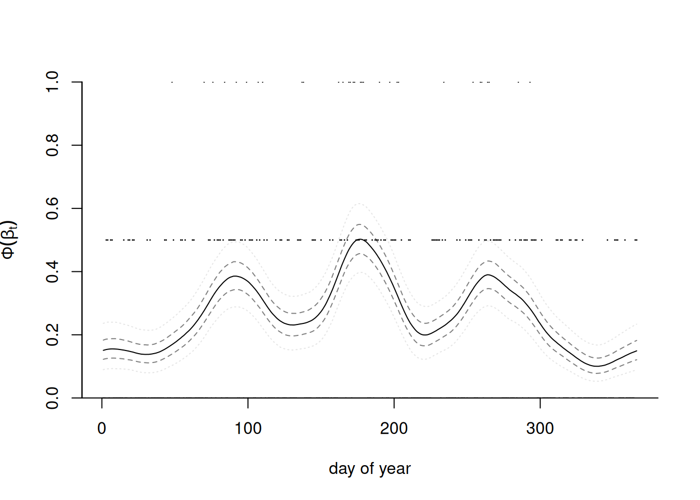
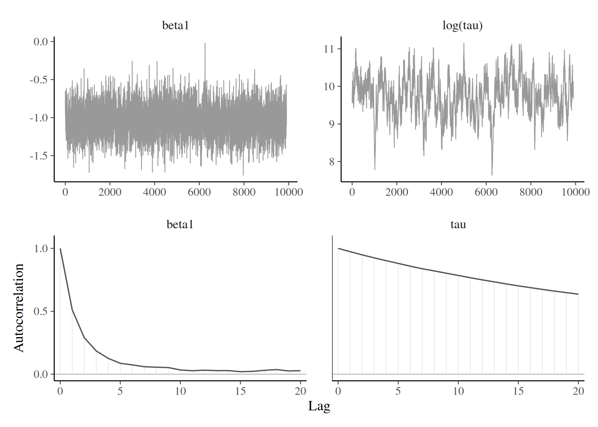
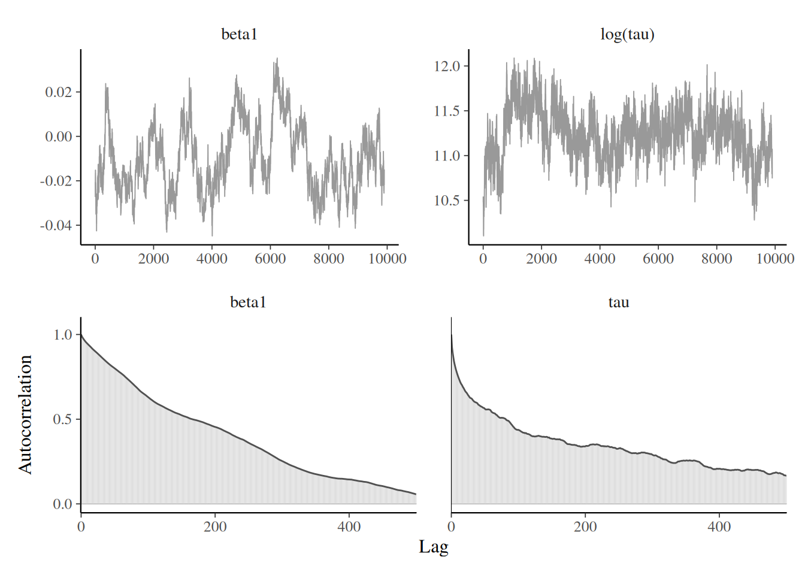

Bayesian modelling
Gibbs sampling and Bayesian workflow
Last compiled Tuesday Sep 22, 2026
Gibbs sampling
The Gibbs sampling algorithm builds a Markov chain by iterating through a sequence of conditional distributions.

Figure 1: Sampling trajectory for a bivariate target using Gibbs sampling.
Gibbs sampler
Split the parameter vector \(\boldsymbol{\theta} \in \boldsymbol{\Theta} \subseteq \mathbb{R}^p\) into \(m \leq p\) blocks, \[\boldsymbol{\theta}^{[j]}\quad j=1, \ldots, m\] such that, conditional on the remaining components of the parameter vector \(\boldsymbol{\theta}^{-[j]}\), the conditional posterior \[p(\boldsymbol{\theta}^{[j]} \mid \boldsymbol{\theta}^{-[j]}, \boldsymbol{y})\] is from a known distribution from which we can easily simulate.
Gibbs sampling update
At iteration \(t\), we can update each block in turn: note that the \(k\)th block uses the partially updated state \[\begin{align*} \boldsymbol{\theta}^{-[k]\star} = (\boldsymbol{\theta}_{t}^{[1]}, \ldots, \boldsymbol{\theta}_{t}^{[k-1]},\boldsymbol{\theta}_{t-1}^{[k+1]}, \boldsymbol{\theta}_{t-1}^{[m]}) \end{align*}\] which corresponds to the current value of the parameter vector after the updates.
Notes on Gibbs sampling
- Special case of Metropolis–Hastings with conditional density as proposal \(q\).
- The benefit is that all proposals get accepted, \(R=1\)!
- No tuning parameter, but parametrization matters.
- Automatic acceptance does not equal efficiency.
To check the validity of the Gibbs sampler, see the methods proposed in Geweke (2004).
Efficiency of Gibbs sampling
As the dimension of the parameter space increases, and as the correlation between components becomes larger, the efficiency of the Gibbs sampler degrades

Figure 2: Trace plots (top) and correlograms (bottom) for the first component of a Gibbs sampler with \(d=20\) equicorrelated Gaussian variates with correlation \(\rho=0.9\) (left) and \(d=3\) with equicorrelation \(\rho=0.5\) (right).
Gibbs sampling requires work!
- You need to determine all of the relevant conditional distributions, which often relies on setting conditionally conjugate priors.
- In large models with multiple layers, full conditionals may only depend on a handful of parameters (via directed acyclic graph and moral graph of the model; not covered).
Example of Gibbs sampling
Consider independent and identically distributed observations, with \[\begin{align*} Y_i &\sim \mathsf{Gauss}(\mu, \tau), \qquad i=1, \ldots, n) \\\mu &\sim \mathsf{Gauss}(\nu, \omega)\\ \tau &\sim \mathsf{inv. gamma}(\alpha, \beta) \end{align*}\]
The joint posterior is not available in closed form, but the independent priors for the mean and variance of the observations are conditionally conjugate.
Joint posterior for Gibbs sample
Write the posterior density as usual, \[\begin{align*} &p(\mu, \tau \mid \boldsymbol{y}) \propto \tau^{-\alpha-1}\exp(-\beta/\tau)\\ &\quad \times \tau^{-n/2}\exp\left\{-\frac{1}{2\tau}\left(\sum_{i=1}^n y_i^2 - 2\mu \sum_{i=1}^n y_i+n\mu^2 \right)\right\}\\&\quad \times \exp\left\{-\frac{(\mu-\nu)^2}{2\omega}\right\} \end{align*}\]
Recognizing distributions from posterior
Consider the conditional densities of each parameter in turn (up to proportionality): \[\begin{align*} p(\mu \mid \tau, \boldsymbol{y}) &\propto \exp\left\{-\frac{1}{2} \left( \frac{\mu^2-2\mu\overline{y}}{\tau/n} + \frac{\mu^2-2\nu \mu}{\omega}\right)\right\}\\ p(\tau \mid \mu, \boldsymbol{y}) & \propto \tau^{-n/2-\alpha-1}\exp\left[-\frac{\left\{\frac{\sum_{i=1}^n (y_i-\mu)^2}{2} + \beta \right\}}{\tau}\right] \end{align*}\]
Gibs sample
We can simulate in turn \[\begin{align*} \mu_t \mid \tau_{t-1}, \boldsymbol{y} &\sim \mathsf{Gauss}\left(\frac{n\overline{y}\omega+\tau \nu}{\tau + n\omega}, \frac{\omega \tau}{\tau + n\omega}\right)\\ \tau_t \mid \mu_t, \boldsymbol{y} &\sim \mathsf{inv. gamma}\left\{\frac{n}{2}+\alpha, \frac{\sum_{i=1}^n (y_i-\mu)^2}{2} + \beta\right\}. \end{align*}\]
Data augmentation and auxiliary variables
When the likelihood \(p(\boldsymbol{y}; \boldsymbol{\theta})\) is intractable or costly to evaluate (e.g., mixtures, missing data, censoring), auxiliary variables are introduced to simplify calculations.
Consider auxiliary variables \(\boldsymbol{U} \in \mathbb{R}^k\) such that \[\int_{\mathbb{R}^k} p(\boldsymbol{U}, \boldsymbol{\theta}\mid \boldsymbol{y}) \mathrm{d} \boldsymbol{U} = p(\boldsymbol{\theta}\mid \boldsymbol{y}),\] i.e., the marginal distribution is that of interest, but evaluation of \(p(\boldsymbol{U}, \boldsymbol{\theta}; \boldsymbol{y})\) is cheaper.
Bayesian augmentation
The data augmentation algorithm (Tanner & Wong, 1987) consists in running a Markov chain on the augmented state space \((\Theta, \mathbb{R}^k)\), simulating in turn from the conditionals
- \(p(\boldsymbol{U}\mid \boldsymbol{\theta}, \boldsymbol{y})\) and
- \(p(\boldsymbol{\theta}\mid \boldsymbol{U}, \boldsymbol{y})\)
For more details and examples, see Dyk & Meng (2001) and Hobert (2011).
Data augmentation: probit example
Consider independent binary responses \(\boldsymbol{Y}_i\), with \[\begin{align*} p_i = \Pr(Y_i=1) = \Phi(\beta_0 + \beta_1 \mathrm{X}_{i1} + \cdots + \beta_p\mathrm{X}_{ip}), \end{align*}\] where \(\Phi\) is the distribution function of the standard Gaussian distribution. The likelihood of the probit model is \[L(\boldsymbol{\beta}; \boldsymbol{y}) = \prod_{i=1}^n p_i^{y_i}(1-p_i)^{1-y_i},\] and this prevents easy simulation.
Probit augmentation
We can consider a data augmentation scheme where \(Y_i = \mathrm{I}(Z_i > 0)\), where \(Z_i \sim \mathsf{Gauss}(\mathbf{x}_i\boldsymbol{\beta}, 1)\), where \(\mathbf{x}_i\) is the \(i\)th row of the design matrix.
The augmented data likelihood is \[\begin{align*} p(\boldsymbol{z}, \boldsymbol{y} \mid \boldsymbol{\beta}) &\propto \exp\left\{-\frac{1}{2}(\boldsymbol{z} - \mathbf{X}\boldsymbol{\beta})^\top(\boldsymbol{z} - \mathbf{X}\boldsymbol{\beta})\right\} \\&\quad \times \prod_{i=1}^n \mathrm{I}(z_i > 0)^{y_i}\mathrm{I}(z_i \le 0)^{1-y_i} \end{align*}\]
Conditional distributions for probit regression
\[\begin{align*} \boldsymbol{\beta} \mid \boldsymbol{z}, \boldsymbol{y} &\sim \mathsf{Gauss}\left\{\widehat{\boldsymbol{\beta}}, (\mathbf{X}^\top\mathbf{X})^{-1}\right\}\\ Z_i \mid y_i, \boldsymbol{\beta} &\sim \begin{cases} \mathsf{trunc. Gauss}(\mathbf{x}_i\boldsymbol{\beta}, -\infty, 0) & y_i =0 \\ \mathsf{trunc. Gauss}(\mathbf{x}_i\boldsymbol{\beta}, 0, \infty) & y_i =1. \end{cases} \end{align*}\] with \(\widehat{\boldsymbol{\beta}}=(\mathbf{X}^\top\mathbf{X})^{-1}\mathbf{X}^\top\boldsymbol{z}\) the ordinary least square estimator.
Data augmentation with scale mixture of Gaussian
The Laplace distribution with mean \(\mu\) and scale \(\sigma\) has density \[\begin{align*} f(x; \mu, \sigma) = \frac{1}{2\sigma}\exp\left(-\frac{|x-\mu|}{\sigma}\right), \end{align*}\] and can be expressed as a scale mixture of Gaussians, where \(Y \sim \mathsf{Laplace}(\mu, \tau)\) is equivalent to \(Y \mid \tau \sim \mathsf{Gauss}(\mu, \tau)\) and \(\tau \sim \mathsf{expo}\{(2\sigma)^{-1}\}\).
Joint posterior for Laplace model
With \(p(\mu, \sigma) \propto \sigma^{-1}\), the joint posterior for the i.i.d. sample is \[\begin{align*} p(\boldsymbol{\tau}, \mu, \sigma \mid \boldsymbol{y}) &\propto \left(\prod_{i=1}^n \tau_i\right)^{-1/2}\exp\left\{-\frac{1}{2}\sum_{i=1}^n \frac{(y_i-\mu)^2}{\tau_i}\right\} \\&\quad \times \frac{1}{\sigma^{n+1}}\exp\left(-\frac{1}{2\sigma}\sum_{i=1}^n \tau_i\right) \end{align*}\]
Conditional distributions
The conditionals for \(\mu \mid \cdots\) and \(\sigma \mid \cdots\) are, as usual, Gaussian and inverse gamma, respectively. The variances, \(\tau_j\), are conditionally independent of one another, with \[\begin{align*} p(\tau_j \mid \mu, \sigma, y_j) &\propto \tau_j^{-1/2}\exp\left\{-\frac{1}{2}\frac{(y_j-\mu)^2}{\tau_j} -\frac{1}{2} \frac{\tau_j}{\sigma}\right\} \end{align*}\]
Inverse transformation
With the change of variable \(\xi_j=1/\tau_j\), we have \[\begin{align*} p(\xi_j \mid \mu, \sigma, y_j) &\propto \xi_j^{-3/2}\exp\left\{-\frac{1}{2\sigma}\frac{\xi_j(y_j-\mu)^2}{\sigma} -\frac{1}{2} \frac{1}{\xi_j}\right\}\\ \end{align*}\] and we recognize the Wald (or inverse Gaussian) density, where \(\xi_i \sim \mathsf{Wald}(\nu_i, \lambda)\) with \(\nu_i=\{\sigma/(y_i-\mu)^2\}^{1/2}\) and \(\lambda=\sigma^{-1}\).
Bayesian LASSO
Park & Casella (2008) use this hierarchical construction to defined the Bayesian LASSO. With a model matrix \(\mathbf{X}\) whose columns are standardized to have mean zero and unit standard deviation, we may write \[\begin{align*} \boldsymbol{Y} \mid \mu, \boldsymbol{\beta}, \sigma^2 &\sim \mathsf{Gauss}_n(\mu \boldsymbol{1}_n + \mathbf{X}\boldsymbol{\beta}, \sigma \mathbf{I}_n)\\ \beta_j \mid \sigma, \tau &\sim \mathsf{Gauss}(0, \sigma\tau)\\ \tau &\sim \mathsf{expo}(\lambda/2) \end{align*}\]
Computational strategies
Sources of poor mixing
Slow mixing can be due to the following:
- poor proposals
- strong correlation between posterior parameters
- overparametrization and lack of identifiability
Computational strategies
These problems can be addressed using one of the following:
Removing redundant parameters
Consider a one-way ANOVA with \(K\) categories, with observation \(i\) from group \(k\) having \[\begin{align*} Y_{i,k} &\sim \mathsf{Gauss}(\mu + \alpha_k, \sigma^2_y) \\ \alpha_k &\sim \mathsf{Gauss}(0, \sigma^2_\alpha) \end{align*}\] and an improper prior for the mean \(p(\mu) \propto 1.\)
There are \(K+1\) mean parameters for the groups, so we can enforce a sum-to-zero constraint for \(\sum_{k=1}^K \alpha_k=0\) and sample \(K-1\) parameters for the difference to the global mean.
Parameter expansion
Add redundant parameter to improve mixing by decorrelating (Liu et al., 1998)
\[\begin{align*} Y_{i,k} &\sim \mathsf{Gauss}(\mu + \xi\eta_k, \sigma^2_y) \\ \eta_k &\sim \mathsf{Gauss}(0, \sigma^2_\eta) \end{align*}\] so that \(\sigma_\alpha = |\xi|\sigma_\eta.\)
Marginalization
Given a model \(p(\boldsymbol{\theta}, \boldsymbol{Z})\), reduce the dependance by sampling from the marginal
\[ p(\boldsymbol{\theta})= \int p(\boldsymbol{\theta}, \boldsymbol{z}) \mathrm{d} \boldsymbol{z}. \]
This happens for data augmentation, etc., and reduces dependency between parameters, but typically the likelihood becomes more expensive to compute
Gaussian model with random effects
Consider a hierarchical Gaussian model of the form \[\begin{align*} \boldsymbol{Y} = \mathbf{X}\boldsymbol{\beta} + \mathbf{Z}\boldsymbol{B} + \boldsymbol{\varepsilon} \end{align*}\] where
- \(\mathbf{X}\) is an \(n \times p\) design matrix with centered inputs,
- \(\boldsymbol{\beta} \sim \mathsf{Gauss}(\boldsymbol{0}_p, \sigma^2\mathbf{I}_p),\)
- \(\boldsymbol{B}\sim \mathsf{Gauss}_q(\boldsymbol{0}_q, \boldsymbol{\Omega})\) are random effects and
- \(\boldsymbol{\varepsilon} \sim \mathsf{Gauss}_n(\boldsymbol{0}_n, \kappa^2\mathbf{I}_n)\) are independent white noise.
Marginalization of Gaussian models
We can write \[\begin{align*} \boldsymbol{Y} \mid \boldsymbol{\beta}, \boldsymbol{B}, \sigma^2 &\sim \mathsf{Gauss}_n(\mathbf{X}\boldsymbol{\beta} + \mathbf{Z}\boldsymbol{B}, \sigma^2\mathbf{I}_p)\\ \boldsymbol{Y} \mid \boldsymbol{\beta} &\sim \mathsf{Gauss}_n(\mathbf{X}\boldsymbol{\beta}, \mathbf{Q}^{-1}), \end{align*}\] where the second line corresponds to marginalizing out the random effects \(\boldsymbol{B}.\)
Efficient calculations for Gaussian models
If, as is often the case, \(\boldsymbol{\Omega}^{-1}\) and \(\mathbf{Z}\) are sparse matrices, the full precision matrix can be efficiently computed using Shermann–Morisson–Woodbury identity as \[\begin{align*} \mathbf{Q}^{-1} &= \mathbf{Z}\boldsymbol{\Omega}^{-1}\mathbf{Z}^\top + \kappa^2 \mathbf{I}_n,\\ \kappa^2\mathbf{Q} & = \mathbf{I}_n - \mathbf{Z} \boldsymbol{G}^{-1} \mathbf{Z}^\top,\\ \boldsymbol{G} &= \mathbf{Z}^\top\mathbf{Z} + \kappa^2 \boldsymbol{\Omega}^{-1} \end{align*}\] Section 3.1 of Nychka et al. (2015) details efficient ways of calculating the quadratic form involving \(\mathbf{Q}\) and it’s determinant.
Blocking
Identify groups of strongly correlated parameters and propose a joint update for these.
- The more parameters we propose at the same time, the lower the chance of acceptance
- Often ways to sample these efficiently
Tokyo rainfall
We consider data from Kitagawa (1987) that provide a binomial time series giving the number of days in years 1983 and 1984 (a leap year) in which there was more than 1mm of rain in Tokyo; see section 4.3.4 of Rue & Held (2005).
We have \(T=366\) days and \(n_t \in \{1,2\}\) \((t=1, \ldots, T)\) the number of observations in day \(t\) and \(y_t=\{0,\ldots, n_t\}\) the number of days with rain.
Smoothing probabilities
The objective is to obtain a smoothed probability of rain. The underlying probit model considered takes \(Y_t \mid n_t, p_t \sim \mathsf{binom}(n_t, p_t)\) and \(p_t = \Phi(\beta_t).\)
We specify the random effects \(\boldsymbol{\beta} \sim \mathsf{Gauss}_{T}(\boldsymbol{0}, \tau^{-1}\mathbf{Q}^{-1}),\) where \(\mathbf{Q}\) is a \(T \times T\) precision matrix that encodes the local dependence.
A circular random walk structure of order 2 is used to model the smooth curves by smoothing over neighbors, and enforces small second derivative. This is a suitable prior because it enforces no constraint on the mean structure.
Random walk prior
This amounts to specifying the process with for \(t \in \mathbb{N} \mod 366 + 1\) \[\begin{align*} \Delta^2\beta_t &= (\beta_{t+1} - \beta_t) - (\beta_t - \beta_{t-1}) \\&=-\beta_{t-1} +2 \beta_t - \beta_{t+1} \sim \mathsf{Gauss}(0, \tau^{-1}). \end{align*}\]
Circulant precision matrix
This yields an intrinsic Gaussian Markov random field with a circulant precision matrix \(\tau\mathbf{Q}\) of rank \(T-1,\) where \[\begin{align*} \mathbf{Q} &= \begin{pmatrix} 6 & -4 & 1 & 0 & \cdots & 1 & -4\\ -4 & 6 & -4 & 1 & \ddots & 0 & 1 \\ 1 & -4 & 6 & -4 & \ddots & 0 & 0 \\ \vdots & \ddots & \ddots & \ddots & \ddots & \ddots & \vdots \\ -4 & 1 & 0 & 0 & \cdots & -4 & 6 \end{pmatrix}. \end{align*}\] Because of the linear dependency, the determinant of \(\mathbf{Q}\) is zero.
Prior draws

Figure 3: Five realizations from the cyclical random walk Gaussian prior of order 2.
Gibbs sampling for Tokyo data
We can perform data augmentation by imputing Gaussian variables, say \(\{z_{t,i}\}\) from truncated Gaussian, where \(z_{t,i} = \beta_t + \varepsilon_{t,i}\) and \(\varepsilon_{t,i} \sim \mathsf{Gauss}(0,1)\) are independent standard Gaussian and \[\begin{align*} z_{t,i} \mid y_{t,i}, \beta_t \sim \begin{cases} \mathsf{trunc. Gauss}(\beta_t, 1, -\infty, 0) & y_{t,i} = 0 \\ \mathsf{trunc. Gauss}(\beta_t, 1, 0, \infty) & y_{t,i} =1 \end{cases} \end{align*}\]
Posterior for Tokyo data
The posterior is proportional to \[\begin{align*} p(\boldsymbol{\beta} \mid \tau)p(\tau)\prod_{t=1}^{T}\prod_{i=1}^{n_t}p(y_{t,i} \mid z_{t,i}) p(z_{t,i} \mid \beta_t) \end{align*}\]
Data augmentation for Tokyo data
Once we have imputed the Gaussian latent vectors, we can work directly with the values of \(z_t = \sum_{i=1}^{n_t} z_{i,t}\) \[\begin{align*} p(\boldsymbol{\beta}, \tau) &\propto \tau^{(T-1)/2}\exp \left( - \frac{\tau}{2} \boldsymbol{\beta}^\top \mathbf{Q} \boldsymbol{\beta}\right) \\& \times \exp\left\{ - \frac{1}{2} (\boldsymbol{z}/\boldsymbol{n} - \boldsymbol{\beta})^\top \mathrm{diag}(\boldsymbol{n})(\boldsymbol{z}/\boldsymbol{n} - \boldsymbol{\beta})\right\} \\& \times \tau^{a-1}\exp(-\tau b) \end{align*}\] where \(\boldsymbol{z} = (z_1, \ldots, z_T),\) as \(n_t^{-1} z_t \sim \mathsf{Gauss}(\beta_t, n_t^{-1}).\)
Gibbs for Tokyo data - conditionals
Completing the quadratic form shows that \[\begin{align*} \boldsymbol{\beta} \mid \boldsymbol{z}, \tau &\sim \mathsf{Gauss}_T\left(\mathbf{Q}^{\star -1} \boldsymbol{z}, \mathbf{Q}^{\star -1}\right)\\ \tau \mid \boldsymbol{\beta} & \sim \mathsf{gamma}\left( \frac{T-1}{2} + a, \frac{\boldsymbol{\beta}^\top \mathbf{Q}\boldsymbol{\beta}}{2} + b \right),\\ \mathbf{Q}^{\star} &= \left\{\tau \mathbf{Q} + \mathrm{diag}(\boldsymbol{n})\right\} \end{align*}\]
Posterior prediction for probability of rainfall

Posterior prediction for probability of rainfall
Blocking vs joint update
Compare the following two stategies
- joint update: given \(\boldsymbol{z}\) and \(\tau\), simulate \(\boldsymbol{\beta}\) jointly
- one-parameter at a time: starting from \(i \sim \mathsf{unif}(\{1, \ldots, 366\}),\) get index \(t= i \mod 366 + 1\) and simulate \(\beta_i \mid \boldsymbol{\beta}_{-i}, \boldsymbol{z}, \tau\) one at a time.
Blocking strategy

Trace plots for Tokyo with blocking of random effects
Individual update strategy

Trace plots for Tokyo with random scan Gibbs for random effects
Lessons from the Tokyo example
What happened?
- there is lower autocorrelation with the joint update (also faster here!) for the \(\boldsymbol{\beta}\)
- in both cases, \(\tau \mid \cdot\) mixes poorly because the values of \(\boldsymbol{\beta}\) were sampled conditional on the previous value.
A better avenue would be to use a Metropolis random walk for \(\tau^{\star}\), simulate \(\boldsymbol{\beta} \mid \tau^{\star}\) and propose the joint vector \((\tau^{\star}, \boldsymbol{\beta}^{\star})\) simultaneously.
One step further
We could also remove the data augmentation step and propose from a Gaussian approximation of the log likelihood, using a Taylor series expansion of the log likelihood about \(\boldsymbol{\beta}_{t-1}\) \[\begin{align*} \log p(\boldsymbol{\beta} \mid \boldsymbol{y}) \stackrel{\boldsymbol{\beta}}{\propto} - \frac{\tau}{2} \boldsymbol{\beta}^\top \mathbf{Q} \boldsymbol{\beta} + \sum_{t=1}^T \log f(y_t \mid \beta_t) \end{align*}\] and the \(y_t\) are conditionally independent in the likelihood. Refer to Section 4.4.1 of Rue & Held (2005) for more details.
Technical aside: in sparsity we trust!
It is crucial to exploit the sparsity structure of \(\mathbf{Q}\) for efficient calculations of the likelihood
- typically requires re-ordering elements to get a banded precision matrix
- precompute the sparse Cholesky
- compute inverse by solving systems of linear equations; there are dedicated algorithms
References

Comment about Bayesian LASSO